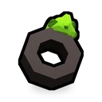
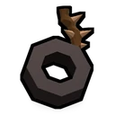

Magic Ring
Magic Ring is an uncommon jewellery. A plain band of heavy metal. Set an idol on it to make a stronger ring.
Stats
| Attack | Armor |
|---|---|
| +1 | +1 |
Item sources
| Source | Quantity | Rarity | Notes |
|---|---|---|---|
| Cult Leader | 1 | 1/25 | |
| Bandit King | 1 | 1/33 | |
| Bernie | 1 | 1/33 | |
| Cyclops | 1 | 1/33 | |
| Desert Worm | 1 | 1/33 | |
| Possessed Sarcophagus | 1 | 1/33 | |
| Punchy | 1 | 1/33 | |
| Scrap Warlord | 1 | 1/33 | |
| Shooty | 1 | 1/33 | |
| Sandstone Golem | 1 | 1/33 | |
| The Old Man | 1 | 1/33 | |
| Lesser Cult Leader | 1 | 1/149 | |
| Mummy | 1 | 1/299 | |
| Wormling | 1 | 1/299 | |
| Rockling | 1 | 1/299 | |
| Squirrel | 1 | 1/400 | |
| Slime | 1 | 1/500 | |
| Bandit King | 1 | 1/800 | Rare Drop table |
| Bernie | 1 | 1/800 | Rare Drop table |
| Cult Leader | 1 | 1/800 | Rare Drop table |
| Cyclops | 1 | 1/800 | Rare Drop table |
| Desert Worm | 1 | 1/800 | Rare Drop table |
| Possessed Sarcophagus | 1 | 1/800 | Rare Drop table |
| Punchy | 1 | 1/800 | Rare Drop table |
| Sandstone Golem | 1 | 1/800 | Rare Drop table |
| Scrap Warlord | 1 | 1/800 | Rare Drop table |
| Shooty | 1 | 1/800 | Rare Drop table |
| The Old Man | 1 | 1/800 | Rare Drop table |
| The Unbound | 1 | 1/800 | Rare Drop table |
| Garbage Man | 1 | 1/2,400 | Rare Drop table |
| Slime King | 1 | 1/2,400 | Rare Drop table |
| Bandit Elite | 1 | 1/3,200 | Rare Drop table |
| Lesser Cult Leader | 1 | 1/3,200 | Rare Drop table |
| Mummy | 1 | 1/3,200 | Rare Drop table |
| Raider | 1 | 1/3,200 | Rare Drop table |
| Super Zombie | 1 | 1/3,200 | Rare Drop table |
| Bandit | 1 | 1/6,400 | Rare Drop table |
| Cave Spider | 1 | 1/6,400 | Rare Drop table |
| Cultist | 1 | 1/6,400 | Rare Drop table |
| Oak Entling | 1 | 1/6,400 | Rare Drop table |
| Rockling | 1 | 1/6,400 | Rare Drop table |
| Sand Veil Cultist | 1 | 1/6,400 | Rare Drop table |
| Sand Zombie | 1 | 1/6,400 | Rare Drop table |
| Slime | 1 | 1/6,400 | Rare Drop table |
| Squirrel | 1 | 1/6,400 | Rare Drop table |
| Wormling | 1 | 1/6,400 | Rare Drop table |
| Zombie | 1 | 1/6,400 | Rare Drop table |
| Tier 1 Endless chest | 1 | 2% of its rows | Chest |
| Tier 2 Endless chest | 1 | 3% of its rows | Chest |
| Tier 3 Endless chest | 1 | 3% of its rows | Chest |
| Tier 4 Endless chest | 1 | 2% of its rows | Chest |
| Dark chest | 1 | 2% of its rows | Chest |
| Royal Chest | 1 | 6% of its rows | Chest |
Uses
| Makes | Takes | Level | Notes |
|---|---|---|---|
 Ring of Garbage Ring of Garbage | 1 | 45 | |
 Oozing Ring | 1 | 40 | |
 Recycler's Ring Recycler's Ring | 1 | 35 | |
 Clutched Ring Clutched Ring | 1 | 30 | |
 Ring of Thorns | 1 | 40 |
Repair Station
The Repair Station mends these with it:
- Ring of Garbage
- Oozing Ring
- Recycler's Ring
- Clutched Ring
- Ring of Thorns
- Hunter's Ring I
- Hunter's Ring II
 Hunter's Ring III
Hunter's Ring III Hunter's Ring IV
Hunter's Ring IV Hunter's Ring V
Hunter's Ring V
Notes
Not written yet
When Magic Ring is worth getting, and what to do with it.
Gallery
Not written yet
No pictures yet: renders, models and animations go here.
Trivia
Not written yet
Anything else worth knowing.
Changes
Not written yet
What changed for Magic Ring, update by update.